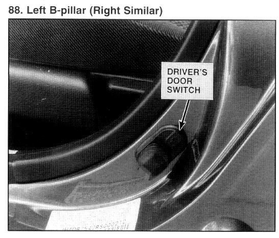

Operation CHARM
: Car repair manuals for everyone.
Home
>>
Acura
>>
1994
>>
Integra (RS, LS) L4-1834cc 1.8L DOHC FI
>>
Repair and Diagnosis
>>
Instrument Panel, Gauges and Warning Indicators
>>
Door Switch
>>
Locations
>>
Driver's Door Switch
>>
Photo 88
Photo 88

Left B-pillar (Right Similar)